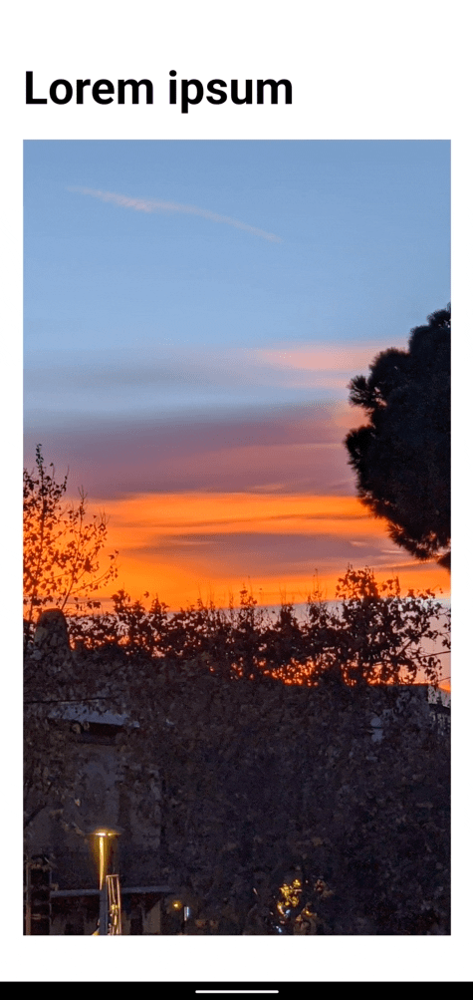

Irurueta Android GL Curl
| This documentation was generated with the assistance of AI. Please report any inaccuracies. |
irurueta-android-gl-curl is an Android library that displays pages that can be flipped like the pages of a paper book, with a 3D page curl effect rendered with OpenGL ES. Pages are fed as bitmaps by a page provider, and the user flips them by dragging a finger across the view.

The main view, CurlTextureView, extends GLTextureView (a TextureView based OpenGL view from
irurueta-android-glutils). Unlike a GLSurfaceView, a
TextureView belongs to the regular view hierarchy, so the page curl view can be composed with other views: it has a
transparent background, it can be placed on top of or below other views, and it can be translucent, moved, scaled,
rotated or animated with regular view properties. In the demo above, the title is a plain TextView placed behind the
pages.
The page curl implementation is based on harism/android-pagecurl.
Features
-
Realistic 3D page curl that follows the finger, with shadows under and over the curl.
-
Pages provided on demand through a
PageProvider, with independent textures and blend colors for the front and back side of each page. -
One page or two pages side by side (
SHOW_ONE_PAGE/SHOW_TWO_PAGES). -
Programmatic navigation, with or without animation (
setCurrentIndex/setSmoothCurrentIndex). -
Page change and page click listeners.
-
Pixel or proportional margins around the pages, and a configurable background (clear) color.
-
Tunable mesh: curl smoothness, shadow colors, brightness close to the curl, and development aids to display the polygon outlines and the curl position.
-
Frames are rendered only when something changes (
RENDER_MODE_WHEN_DIRTY), so an idle view does not use the GPU.
Two views
The library contains two views with the same API:
| View | Description |
|---|---|
|
Extends |
|
Extends |
See Choosing a view for details. The rest of this documentation uses CurlTextureView;
everything applies to CurlGLSurfaceView too.
Core concepts
-
The view keeps three page meshes: the static left and right pages, and the page being curled.
-
When a page needs content, the view calls your
PageProvider.updatePage, which fills aCurlPagewith bitmaps (and optionally blend colors) for its front and back sides. See Pages and textures. -
currentIndexis the zero based index of the page shown on the right side. Flipping the right page towards the left increases it; flipping the left page towards the right decreases it. See Page navigation.
Public API at a glance
| Type | Purpose |
|---|---|
|
The page curl view, based on a |
|
The same view, based on a |
|
Your implementation: provides the number of pages and fills each |
|
Holds the textures (bitmaps) and blend colors of the front and back side of a page ( |
|
Notified when the visible page changes. |
|
Notified when a page is tapped. |
|
Notified when the view size changes, for instance to adjust margins. |
|
Internal OpenGL renderer and page mesh used by the views. |
Where to go next
-
Installation: add the dependency to your project.
-
Usage: add the view to a layout, provide pages and handle the lifecycle.
-
Pages and textures: front and back textures, blend colors and memory.
-
Page navigation: current page, animated jumps, listeners and view modes.
-
Appearance and animation: margins, background, shadows and animation durations.
-
Configuration reference: every property and default value.
-
Reference: API documentation and other links.